Splitting
CLAUDE.md
How Claude Code memory actually loads — and a concrete proposal to break our 290-line monolith into scoped files that cost less and get followed more. Every claim verified against Anthropic's docs.
Agenda

The Problem & the Loading Model
Why one file, loaded on every session, is the wrong default.
One file, paid on every task
- Root CLAUDE.md is 290 lines / ~23 KB — ~1.5× the recommended per-file ceiling.
- Nearly every session launches from repo root, so the whole file loads every time — regardless of task.
- Most of it is Go-only (errors, testing, DB schema, API-adapter lore): dead weight on Python, TS, k8s, and docs work.
- Drift already bit us:
stl-verify/AGENTS.mddescribescmd/server/,application/,valueobject/— none exist. Two instruction files, out of sync.
Ancestors eager, descendants lazy
| Launch location | Loaded at startup (full) | Loaded on demand |
|---|---|---|
| Repo root | Root CLAUDE.md + global ~/.claude | Every subdirectory file, when its subtree is read |
| A subdirectory | That file + every ancestor up to root | Sibling / deeper subtrees not yet touched |
“Files above the working directory load in full at launch. Files in subdirectories load on demand when Claude reads files in those directories.” — code.claude.com/docs/en/memory. This is the lever: a scoped subdir file costs nothing until its code is touched.
Concatenated, not overridden
Ordering is a reading order, not a precedence winner — a subtlety we'll return to when we bust two myths.
Imports, Rules & Pitfalls
The syntax, what actually defers, and the traps to avoid.
Import syntax — full spec
Useful trick: an AGENTS.md that is just @CLAUDE.md bridges other tools to one source of truth — killing the drift from slide 4.
@import ≠ token savings
Does NOT defer
Expands eagerly at startup
@importin root- Rule file with no
paths:
DOES defer
Loads only when relevant
- Per-subdirectory
CLAUDE.md - Rule with a
paths:glob - Skills (on-demand)
Anatomy of a path-scoped rule
⚠ Verify empirically. GitHub issues (#21858, #16853, #13905) report paths: misfiring — an undocumented globs: reportedly works, and user-level ~/.claude/rules/ scoping is ignored. Test before relying; fall back to per-dir CLAUDE.md.
Two myths, refuted by the docs
Consequence: don't encode conflict-resolution via nesting depth. Keep each rule unambiguous where it lives.
Why this is worth doing
The Proposal
Lean root, scoped everything else — then an 8-step rollout.
Lean root, scoped everything else
Where each rule should live
| Mechanism | Loads when | Use for |
|---|---|---|
Root CLAUDE.md | Always | Repo map, cross-cutting rules, pointers — ~60 lines |
Subdir CLAUDE.md | Subtree read | Per-package conventions owned next to the code |
.claude/rules/ + paths: | Match read | One concern across scattered paths (DB, observability) |
| Skill | Invoked | Sometimes-relevant workflows (review, new-indexer) |
The rollout — 8 low-risk steps
stl-verify/CLAUDE.md (delete stale AGENTS.md, or bridge via @). Python + TS lint → their own files.go-database.md. Alerts + runbooks → observability.md, each with a paths: glob.paths: is buggy — try globs:). Add a <200-line guardrail.Load less, follow more
Eager ancestors, lazy descendants, concatenation over precedence — deferral via subdir files and scoped rules turns one 290-line monolith into memory Claude actually reads. Let's ship the 8 steps.